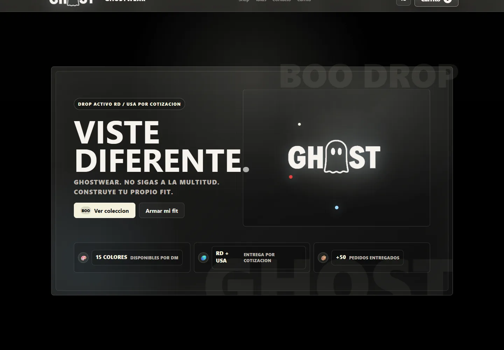
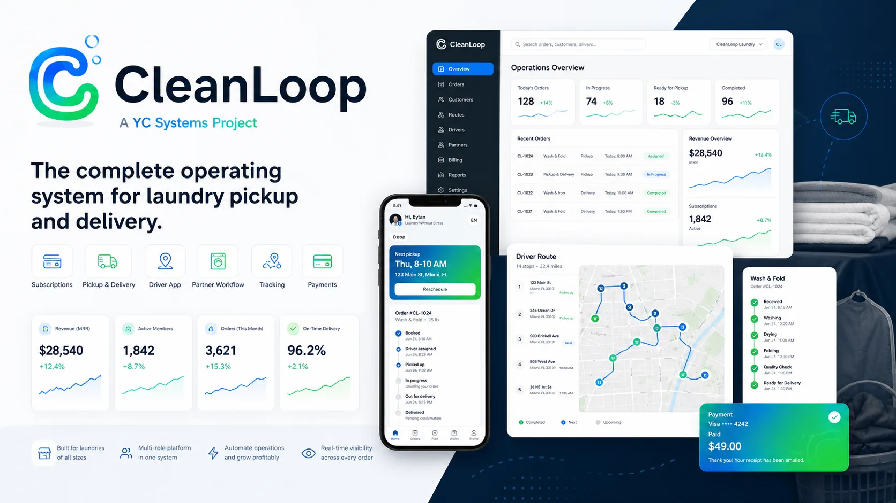

Comercio electrónico
GhostWear
Catálogo, carrito y pedidos conectados a WhatsApp para convertir visitas en conversaciones de venta.
YC Systems LLC · Software operativo
Centralizamos procesos, clientes y datos en sistemas que tu equipo puede operar, medir y mejorar.
Producto propio · implementación por fases · soporte continuo
Elige tu ruta
Selecciona un producto existente o define una primera fase para tu propia operación.
Conoce plataformas desarrolladas para operaciones específicas y revisa su disponibilidad.
Ver productos02Construir un sistema para mi empresaOrdena un proceso comercial, administrativo u operativo mediante una primera fase clara.
Solicitar diagnóstico¿Todavía no sabes qué necesitas? El diagnóstico inicial ayuda a definir el primer paso.
Producto destacado
Pedidos, clientes, recogidas, entregas, rutas y pagos conectados en un flujo operativo claro.

Nexus Operational Intelligence
Nexus no se presenta como chatbot. Es la capa visual y narrativa que une cada producto de YC Systems alrededor de una misma filosofía: claridad antes que complejidad.
Casos
Una selección de experiencias digitales entregadas para comercio, bienes raíces y presencia corporativa.

Catálogo, carrito y pedidos conectados a WhatsApp para convertir visitas en conversaciones de venta.
Presencia comercial enfocada en confianza, captación y contacto directo con compradores.
Siguiente paso
Cuéntanos qué proceso necesitas controlar, medir o automatizar y recibe una recomendación inicial de alcance y prioridades.